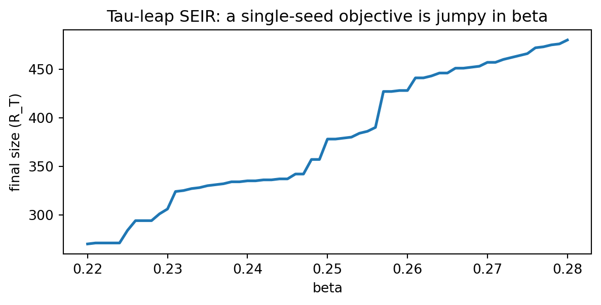
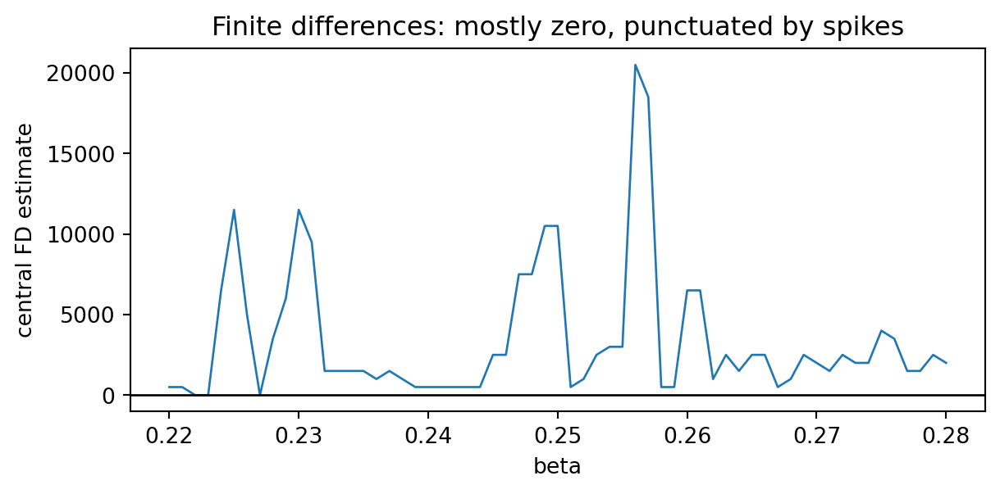

6Differentiability axis: when your simulator is (not) differentiable
6.1 Motivation
In infectious disease modelling we often start from a simulator:
an ODE model solved numerically,
a stochastic simulator (e.g. Gillespie / CTMC),
an agent-based model,
a hybrid model with discrete events (interventions, thresholds, reporting delays).
Some of these are naturally differentiable (or can be made differentiable), and some are not. Choosing an inference method is easier if you explicitly locate your model on a differentiability axis. This framing mirrors current simulation-based inference practice (Cranmer, Brehmer, and Louppe 2020).
6.2 The differentiability axis
6.2.1 1) Fully differentiable end-to-end
Everything from parameters \(\theta\) to objective \(\mathcal{L}(\theta)\) is differentiable. Examples include differentiable ODE solvers with smooth observation models.
Implications: gradient-based optimisation and gradient-informed Bayesian methods are feasible.
6.2.2 2) Differentiable core with non-differentiable edges
The simulator may be differentiable, but you have non-smooth components:
thresholds / clipping / rounding,
discrete interventions triggered by conditions,
discontinuous likelihood approximations.
Implications: you may need smoothing, continuous relaxations, or surrogate losses.
6.2.3 3) Stochastic but reparameterisable
Randomness is present, but can be written as a deterministic transform of noise: \(z = g(\theta, \epsilon)\) with \(\epsilon \sim p(\epsilon)\).
Implications: pathwise (reparameterisation) gradients can work.
6.2.4 4) Black-box / non-differentiable simulator
The simulator is discrete, event-driven, or otherwise non-differentiable with respect to parameters.
Implications: likelihood-free or gradient-free methods (ABC, synthetic likelihood, neural density estimators, score-based approaches, etc.) are often more appropriate.
6.3 Demo 1: finite differences can be unstable at discontinuities
A common first instinct is to “just do finite differences” when gradients are unavailable. This can fail dramatically if your objective is not smooth.
Here is the simplest possible example: a step function.
import matplotlib.pyplot as pltfrom diff_epi_inference.differentiability.demos import ( discontinuous_finite_difference_instability_demo,)res = discontinuous_finite_difference_instability_demo(x0=0.0)fig, ax = plt.subplots(figsize=(6, 3))ax.plot(res.eps, res.fd_estimates, marker="o")ax.set_xscale("log")ax.set_yscale("log")ax.set_xlabel("finite-difference step size ε")ax.set_ylabel("central FD estimate")ax.set_title("Finite differences near a discontinuity explode as ε → 0")plt.show()print({"x0": res.x0, "eps": res.eps.tolist(), "fd": res.fd_estimates.round(2).tolist()})
Takeaway: if your simulator includes hard thresholds, conditionals that change behaviour, integer rounding, or discrete-event updates, finite-difference gradients can become meaningless (or wildly sensitive to your choice of \(\epsilon\)).
6.4 Demo 2: autodiff on a smooth function is stable
When your simulator and likelihood are smooth, autodiff gives you gradients that are:
stable to step-size choices,
exact up to floating point / control-flow choices,
cheap compared to finite differences in high dimensions.
6.5 Demo 3: a stochastic tau-leap SEIR simulator is non-differentiable as implemented
A tau-leaping simulator updates compartments using random integer transitions. For a fixed random seed, the mapping
\[\beta \mapsto R_T(\beta)\]
(where \(R_T\) is the final recovered count) tends to be jumpy: flat for a while, then a sudden change when a random draw flips. That means a derivative in the usual sense does not exist for a single sample path.
import matplotlib.pyplot as pltfrom diff_epi_inference.differentiability.demos import tau_leap_seir_nondifferentiability_demores = tau_leap_seir_nondifferentiability_demo(beta0=0.25, span=0.06, n=61, fd_eps=1e-3, seed=0)fig, ax = plt.subplots(figsize=(7, 3))ax.plot(res.betas, res.final_size, lw=2)ax.set_xlabel("beta")ax.set_ylabel("final size (R_T)")ax.set_title("Tau-leap SEIR: a single-seed objective is jumpy in beta")plt.show()fig, ax = plt.subplots(figsize=(7, 3))ax.plot(res.betas, res.fd_estimates, lw=1)ax.axhline(0.0, color="k", lw=1)ax.set_xlabel("beta")ax.set_ylabel("central FD estimate")ax.set_title("Finite differences: mostly zero, punctuated by spikes")plt.show()


Interpretation:
The expectation\(\mathbb{E}[R_T(\beta)]\) may be smooth in \(\beta\).
But the single-run simulator output is not (and most inference pipelines see the single-run output).
This is where you should consider:
averaging / using common random numbers carefully,
reparameterisable constructions (when possible),
synthetic likelihood / SBI / ABC,
differentiable surrogates or relaxations.
6.6 A method-selection decision tree
This is deliberately simplified, but useful as a first pass.
flowchart TD A[Start: simulator + observation model] --> B{Is everything differentiable\nend-to-end?} B -- Yes --> C[Gradient-based inference\n(HMC/NUTS, VI, MAP)] B -- No --> D{Is the core differentiable\nbut edges are non-smooth?} D -- Yes --> E[Smoothing / relaxations\n+ gradient-based methods] D -- No --> F{Is the simulator stochastic\nbut reparameterisable?} F -- Yes --> G[Pathwise gradients\n(reparameterisation trick)] F -- No --> H[Gradient-free / likelihood-free\n(ABC, synthetic likelihood, SBI, surrogates)]
flowchart TD
A[Start: simulator + observation model] --> B{Is everything differentiable\nend-to-end?}
B -- Yes --> C[Gradient-based inference\n(HMC/NUTS, VI, MAP)]
B -- No --> D{Is the core differentiable\nbut edges are non-smooth?}
D -- Yes --> E[Smoothing / relaxations\n+ gradient-based methods]
D -- No --> F{Is the simulator stochastic\nbut reparameterisable?}
F -- Yes --> G[Pathwise gradients\n(reparameterisation trick)]
F -- No --> H[Gradient-free / likelihood-free\n(ABC, synthetic likelihood, SBI, surrogates)]
6.7 Method selection checklist (end-of-chapter)
When you are picking an inference approach, write down answers to these explicitly:
Where is non-smoothness coming from? thresholds, rounding, discrete interventions, censoring?
What gradients do you actually need? w.r.t. parameters only, or also w.r.t. latent trajectories / controls?
If stochastic: can you express randomness as \(x = g(\theta, \epsilon)\) with \(\epsilon\) independent of \(\theta\)?
If not differentiable: can you build a differentiable relaxation that is scientifically acceptable?
Cost profile: how expensive is one simulation? can you batch/parallelise? can you amortise with a surrogate?
Identifiability: even with gradients, do you have enough information in the data to pin down \(\theta\)?
Validation plan: what will you use (PPC, SBC, coverage checks) to detect when the method is lying to you?
6.8 Key takeaways
Always classify your simulator and observation pipeline by differentiability before choosing inference.
Finite differences are unreliable around discontinuities and discrete-event dynamics.
When exact gradients are unavailable, move deliberately to relaxations or likelihood-free methods.
Cranmer, Kyle, Johann Brehmer, and Gilles Louppe. 2020. “The Frontier of Simulation-Based Inference.”Proceedings of the National Academy of Sciences 117 (48): 30055–62.